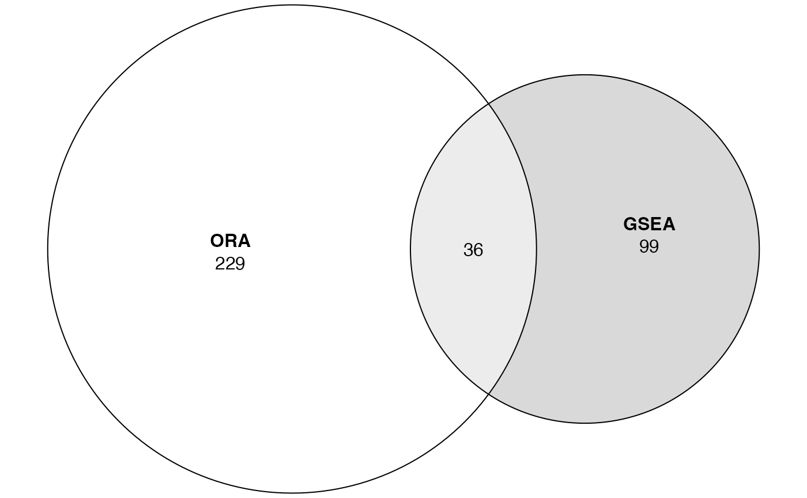

vignettes/topic2_06_compare_ORA_GSEA.Rmd
topic2_06_compare_ORA_GSEA.RmdWe apply ORA and GSEA on the same p53 datasets and compare the results.
lt = readRDS(system.file("extdata", "p53_expr.rds", package = "GSEAtraining"))
expr = lt$expr
condition = lt$conditionWe convert gene IDs to Entrez IDs in expr:
library(GSEAtraining)
expr = convert_to_entrez_id(expr)## ## gene id might be SYMBOL (p = 0.710 )## 'select()' returned 1:many mapping between keys and columnsORA
We need to perform t-test or similar DE test to extract DE genes:
We apply t-test to every gene.
p = apply(expr, 1, function(x) {
x1 = x[condition == "WT"]
x2 = x[condition == "MUT"]
t.test(x1, x2)$p.value
})Faster row-wise t-test:
library(genefilter)
tdf = rowttests(expr, factor(condition)) # the second must be a "factor"
tdf$fdr = p.adjust(tdf$p.value, "BH")
sum(tdf$fdr < 0.05) # number of diff genes## [1] 2It seems there are not too many diff genes. We look at the distribution of the t-statistics:
Instead of setting a cutoff for FDR, we set a cutoff for t-statistics, just to get enough number of diff genes.
## [1] 478First we perform ORA, using GO BP gene sets:
library(clusterProfiler)
library(org.Hs.eg.db)## Warning: package 'S4Vectors' was built under R version 4.3.2
l_sig = abs(tdf$statistic) > 2
tb_ora = enrichGO(gene = rownames(expr)[l_sig],
OrgDb = org.Hs.eg.db,
ont = "BP",
pAdjustMethod = "BH")
tb_ora = as.data.frame(tb_ora) # only significant onesThen we perform GSEA, using t-statistics as gene scores.
s = tdf$statistic
names(s) = rownames(tdf) # s must have names (gene IDs)
s = sort(s, decreasing = TRUE) # s must be pre-sorted
tb_gsea = gseGO(geneList = s,
OrgDb = org.Hs.eg.db,
ont = "BP",
pAdjustMethod = "BH")## preparing geneSet collections...## GSEA analysis...## Warning in fgseaMultilevel(pathways = pathways, stats = stats, minSize =
## minSize, : There were 1 pathways for which P-values were not calculated
## properly due to unbalanced (positive and negative) gene-level statistic values.
## For such pathways pval, padj, NES, log2err are set to NA. You can try to
## increase the value of the argument nPermSimple (for example set it nPermSimple
## = 10000)## Warning in fgseaMultilevel(pathways = pathways, stats = stats, minSize =
## minSize, : For some of the pathways the P-values were likely overestimated. For
## such pathways log2err is set to NA.## Warning in fgseaMultilevel(pathways = pathways, stats = stats, minSize =
## minSize, : For some pathways, in reality P-values are less than 1e-10. You can
## set the `eps` argument to zero for better estimation.## leading edge analysis...## done...
tb_gsea = as.data.frame(tb_gsea) # only significant onesWe compare the two significant GO lists:
